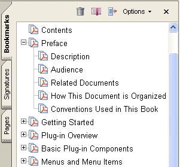

Working with Bookmarks¶
You can use the core API to create new bookmarks and search for existing ones. A bookmark is a link with representative text on the Bookmarks tab in the navigation pane. Each bookmark navigates to a different view or page within a PDF document. You can also use a bookmark to navigate to a specific destination within a PDF document, to another document (PDF or other), or to a web page. Bookmarks can also perform actions, such as executing a menu item or displaying a graphic file.
About bookmarks¶
Bookmarks are represented by a PDBookmark object. All bookmarks have the following attributes:
A title that appears in Adobe Reader or Acrobat.
An action that specifies what happens when a user clicks on the bookmark. The typical action for a bookmark is to move to another location in the current document, although other actions can be specified.
Every document has a root bookmark. The root bookmark does not represent a physical bookmark that appears in Adobe Reader or Acrobat, but is the root from which all bookmarks in the tree are descended. Bookmarks are organized in a tree structure in which each bookmark has zero or more children that appear indented, and zero or more siblings that appear at the same indentation level. All bookmarks except the bookmark at the top level of the hierarchy have a parent, the bookmark under which it is indented. A bookmark is open if its children are visible on screen, and closed if they are not.
The following image shows how bookmarks appear in Adobe Reader or Acrobat.
The Acrobat core API contains methods that operate on bookmarks. Using these methods, you can perform the following tasks:
Create new bookmarks
Get and set various attributes of a bookmark (such as its title or action or whether it is open)
Search for a bookmark
Creating bookmarks¶
Before you can create a bookmark, you must create a PDDoc object that represents the PDF document to which the bookmark is added. (See Creating a PDDoc object.)
To create bookmarks for a PDF document, perform the following tasks:
Get the root of the PDF document’s bookmark tree by invoking the
PDDocGetBookmarkRootmethod. This method requires aPDDocobject and returns aPDBookmarkobject that represents the document’s root bookmark. The document’s root bookmark does not appear in Adobe Reader or Acrobat.Create another
PDBookmarkobject that represents the bookmark to add to the document’s root bookmark by invoking thePDBookmarkAddNewChildmethod. This method requires aPDBookmarkobject that represents the parent bookmark (in this case the parent bookmark is also the document’s root bookmark) and anASAtomobject that represents the bookmark’s title.Create a
PDBookmarkobject that represents a sibling bookmark to the bookmark that was added to the document’s root bookmark (the sibling bookmark is also a child of the document’s root bookmark). You can perform this task by invoking thePDBookmarkAddNewSiblingmethod. This method requires aPDBookmarkobject that represents the new bookmark’s sibling bookmark and anASAtomobject that represents the bookmark’s title.
The following code example adds two new bookmarks to a PDF document. After each bookmark is created, the PDBookmarkIsValid method is invoked to determine whether the bookmark is valid. The name of the PDDoc object used in this code example is myPDDoc. (See Creating a PDDoc object.)
//Declare a bookmark object
PDBookmark rootBookmark;
PDBookmark childBookmark ;
PDBookmark siblingBookmark;
//Get the root bookmark
rootBookmark = PDDocGetBookmarkRoot(myPDDoc);
if (PDBookmarkIsValid(rootBookmark)){
//Add a child bookmark to the root bookmark
childBookmark = PDBookmarkAddNewChild(rootBookmark, "Bookmark1");
if (PDBookmarkIsValid(childBookmark)){
//Add a sibling bookmark to the child bookmark
siblingBookmark = PDBookmarkAddNewSibling(childBookmark, "Bookmark2");
}
}
Defining bookmark actions¶
After you create a new bookmark, you must define an action that occurs when a user clicks on the bookmark. Otherwise, nothing occurs when a user clicks on the bookmark.
To create an action for a bookmark, you must create a PDAction object that represents the action that occurs when a user clicks on a bookmark. Once you create a PDAction object, you can assign it to a bookmark. (See Assigning an action to a bookmark.)
As specified earlier in this chapter, a typical bookmark action is to move to another location in the current document. To illustrate how to create a bookmark action, this section defines a bookmark action that displays a specific page in a PDF document when a user clicks the bookmark.
To define a bookmark action that generates a specific view of a PDF document, you create a PDAction object by invoking the PDActionNewFromDest method. This method creates a new action that directs the user to the specified destination view and requires the following arguments:
A
PDDocthat represents the PDF document for which the action is created.A
PDViewDestinationobject that represents a specific view in the PDF document. (See Creating a PDViewDestination object.)A
PDDocthat represents the destination document. This object is the same object that is specified as the first parameter.
The PDActionNewFromDest method returns a PDAction method.
Creating a PDViewDestination object¶
You must create a PDViewDestination object in order to invoke the PDActionNewFromDest method. To create a PDViewDestination object, invoke the AVPageViewToViewDest method and pass the following arguments:
An
AVPageViewobject that represents the page view from which the destination is created. For information about creating this object, see Creating a AVPageView object.An
ASAtomobject that specifies the fit type of the view destination (see the table that follows this list).A
PDDocobject that represents the PDF document for which the view is established.
The AVPageViewToViewDest method returns a PDViewDestination object. The following table specifies the fit type values that you pass to the AVPageViewToViewDest method as the second argument.
Value |
Description |
|---|---|
XYZ |
Destination specified as upper-left corner point and a zoom factor. |
Fit |
Fits the page into the window, corresponding to the Acrobat viewer’s Fit Page menu item. |
FitH |
Fits the width of the page into the window, corresponding to the Acrobat viewer’s Fit Width menu item. |
FitV |
Fits the height of the page into a window. |
FitR |
Fits the rectangle specified by its upper-left and lower-right corner points into the window. |
FitB |
Fits the rectangle containing all visible elements on the page (known as the bounding box) into the window (corresponds to the Acrobat viewer’s Fit Visible menu item). |
FitBH |
Fits the width of the bounding box into the window. |
FitBV |
Fits the height of the bounding box into the window. |
Creating a AVPageView object¶
You must create an AVPageView object that represents the page view in order to invoke the AVPageViewToViewDest method. You can create an AVPageView object by invoking the AVDocGetPageView method. This method requires an AVDoc that represents a PDF document whose page view is obtained and returns an AVPageView object.
You can create an AVDoc object that is based on the PDDoc object that already exists by invoking the AVDocFromPDDo c method and passing the PDDoc object. You can invoke this method as an argument for the AVDocGetPageView method.
AVPageView myPageView = AVDocGetPageView(AVDocFromPDDoc(myPDDoc));
Once you create an AVPageView object, you can specify a specific PDF document page number by invoking the AVPageViewGoTo method and passing the AVPageView object and an ASInt32 object that represents the page number:
ASInt32 pNum = 2;
AVPageViewGoTo(myPageView,pNum);
Assigning an action to a bookmark¶
After you create both an AVPageView object and an PDViewDestination object, you can create a PDAction object and assign it to a specific bookmark by invoking the PDBookmarkSetAction method and passing the PDBookmark object and the PDAction object as arguments.
The following code example creates a PDAction object and assigns it to a bookmark that is represented by a PDBookmark object named childBookmark.
//Create a PDDoc object based on the current PDF document
AVDoc avDoc = AVAppGetActiveDoc();
AVPageView pageView = AVDocGetPageView(avDoc);
PDPageNumber pageNum = AVPageViewGetPageNum(pageView);
PDDoc myPDDoc = AVDocGetPDDoc(avDoc);
//Create a AVPageView object that represents the page view of a document
AVPageView myPageView = AVDocGetPageView(AVDocFromPDDoc(myPDDoc));
//Set the page view to the second page
ASInt32 pNum = 2;
AVPageViewGoTo(myPageView,pNum);
//Create an PDViewDestination object that is used to create a PDAction object
PDViewDestination pdvDes = AVPageViewToViewDest(myPageView,ASAtomFromString("Fit"),myPDDoc);
//Create a PDAction object
PDAction myAction = PDActionNewFromDest(myPDDoc,pdvDes,myPDDoc);
//Attach an action to the bookmark
PDBookmarkSetAction(childBookmark,myAction);
Caution
When running this code example, you must have the PDF document on which the PDDoc object is based open. Otherwise, a run-time error occurs. Also, you must create a PDBookmark object named childBookmark. (See Creating bookmarks.)
Removing bookmark actions¶
You can remove an action from a bookmark by invoking the PDBookmarkRemoveAction method. After you remove a bookmark, you can add a new action. The PDBookmarkRemoveAction method requires a PDBookmark object that represents the bookmark from which the action is removed.
Opening and closing bookmarks¶
You can programmatically open and close a bookmark. To open and close a bookmark, invoke the PDBookmarkSetOpen method and pass the following arguments:
A
PDBookmarkobject to open or close.An
ASBoolvalue that specifies whether to open or close the bookmark. The valuetruespecifies to open the bookmark and the valuefalsespecifies to close the bookmark.
Before you invoke the PDBookmarkSetOpen method, it is recommended that you invoke the PDBookmarkIsOpen method to determine whether the bookmark is open. This method requires a PDBookmark object and returns an ASBool value. If the bookmark is open, then true is returned.
The following code example retrieves and opens a bookmark whose title is Samples. For information about retrieving a specific bookmark, see Retrieving a specific bookmark.
//Retrieve a bookmark whose title is Samples
PDBookmark rootBookmark, myBookmark;
char* bookmarkTitle = "Samples";
//Get the root bookmark
rootBookmark = PDDocGetBookmarkRoot(myPDDoc);
//Get the bookmark whose title is Samples
myBookmark = PDBookmarkGetByTitle (rootBookmark, bookmarkTitle, strlen(bookmarkTitle), -1);
if (PDBookmarkIsValid (myBookmark)){
//Determine whether the bookmark is open
if (!PDBookmarkIsOpen(myBookmark)){
//Open the bookmark
PDBookmarkSetOpen(myBookmark,true);
AVAlertNote("The bookmark was opened");
}
}
else
AVAlertNote("The bookmark was not retrieved");
Retrieving bookmarks¶
You can retrieve the root bookmark, retrieve a specific bookmark, or retrieve all bookmarks that are located within a PDF document.
Retrieving the root bookmark¶
Every PDF document has a root bookmark. The root bookmark does not represent a physical bookmark, but is the root from which all bookmarks in the tree are descended.
The following code example shows how to get a PDF document’s root bookmark by creating application logic within a user-defined function named GetFirstBookmark. First, the PDDocGetBookmarkRoot method is invoked to get the bookmark root. This method requires a PDDoc object that represents the PDF document from which the root bookmark is retrieved and returns a PDBookmark object that represents the root bookmark. (See Creating a PDDoc object.)
Next, the PDBookmarkGetFirstChild method is invoked to get the first child of the root. If there are no bookmarks, PDBookmarkGetFirstChild returns NULL.
PDBookmark GetFirstBookmark(PDDoc doc)
{
PDBookmark theroot, childBookmark;
theroot = PDDocGetBookmarkRoot(doc);
childBookmark = PDBookmarkGetFirstChild(theroot);
return childBookmark;
}
Retrieving a specific bookmark¶
You can retrieve a specific bookmark by specifying its title. The following code example retrieves a specific bookmark by invoking the PDDocGetBookmarkRoot method to get the document’s root bookmark as a starting point for the search. It then invokes the PDBookmarkGetByTitle method to retrieve the first bookmark whose title matches the specified title. This method requires the following arguments:
The root of the bookmark tree that is searched.
A character pointer that specifies the title of the bookmark.
An
ASInt32object that specifies the length of the character pointer.An
ASInt32object that specifies the number of bookmark levels to search. The value-1specifies to search the entire sub-tree. The value1specifies to search only child bookmarks of the current bookmark. The value0specifies to look at the current bookmark.Retrieving a specific bookmark
//Retrieve a bookmark whose title is Samples
PDBookmark rootBookmark, myBookmark;
char* bookmarkTitle = "Samples";
//Get the root bookmark
rootBookmark = PDDocGetBookmarkRoot(myPDDoc);
//Retrieve a specific bookmark
myBookmark = PDBookmarkGetByTitle (rootBookmark, bookmarkTitle, strlen(bookmarkTitle), -1);
if (PDBookmarkIsValid (myBookmark))
AVAlertNote("The bookmark was retrieved");
else
AVAlertNote("The bookmark was not retrieved");
Note
In the previous code example, a PDDoc object named myPDDoc is passed to the PDDocGetBookmarkRoot method. For information about creating this object, see Creating a PDDoc object.
Retrieving all bookmarks¶
You can use the Acrobat core API to retrieve all bookmarks located within a PDF document. For example, you can retrieve the title of every bookmark that is located within a PDF document.
The following code example creates a recursive user-defined function named VisitAllBookmarks. First it invokes the PDBookmarkIsValid method to ensure that the bookmark that is passed is valid (the root bookmark is always valid.)
Second, this user-defined function retrieves the title of the bookmark by invoking the PDBookmarkGetTitle method. This method requires the following arguments:
A
PDBookmarkobject that contains the title to retrieve.A character pointer that is populated with the bookmarks title.
An
ASInt32object that represents the size of the character pointer.
Because the size of the bookmark’s title is unknown, the PDBookmarkGetTitle is invoked twice. The first time it is invoked, NULL is passed as the buffer address (second argument) and 0 is specified as the buffer size (third argument). The text length is returned to an ASInt32 object named bufSize. The ASmalloc method is invoked which allocates bufSize bytes to the character pointer.
The second time PDBookmarkGetTitle is invoked, the allocated character pointer is passed as well as the ASInt32 object named bufSize. The character pointer is populated with the bookmark’s title. The AVAlertNote method is invoked and the character pointer is passed as an argument that results in the bookmark’s title being displayed within a message box.
The PDBookmarkHasChildren method is invoked to determine whether there are any child bookmarks under the current bookmark. If there are child bookmarks, the PDBookmarkGetFirstChild method is invoked to retrieve the first child bookmark. A recursive call is made to VisitAllBookmarks (that is, the user-defined method is invoking itself) until there are no more children bookmarks. Then the PDBookmarkGetNext method is invoked to get a sibling bookmark and the process continues until there are no more bookmarks within the PDF document.
//Recursively go through bookmark tree to visit each bookmark
void VisitAllBookmarks (PDBookmark aBookmark)
{
PDBookmark treeBookmark;
DURING
//Ensure that the bookmark is valid
if (!PDBookmarkIsValid(aBookmark))
E_RTRN_VOID
//Get the title of the bookmark
char * bmBuf;
ASInt32 bufSize = PDBookmarkGetTitle(aBookmark, NULL, 0) +1;
//Allocate the size of bufSize to the character pointer
bmBuf = (char*)ASmalloc((os_size_t)bufSize);
//Populate bmBuf with the bookmark's title
PDBookmarkGetTitle(aBookmark, bmBuf, bufSize);
//Display the title of the bookmark within a message box
AVAlertNote(bmBuf);
//Determine if the current bookmark has children bookmark
if (PDBookmarkHasChildren (aBookmark))
{
//Get the first child of the bookmark
treeBookmark = PDBookmarkGetFirstChild(aBookmark);
while (PDBookmarkIsValid (treeBookmark)) {
VisitAllBookmarks (treeBookmark);
treeBookmark = PDBookmarkGetNext(treeBookmark);
}
}
HANDLER
END_HANDLER
}
Deleting bookmarks¶
You can use the Acrobat core API to delete an existing bookmark. Deleting a bookmark deletes child bookmarks; however, PDF document content is not affected. To delete a bookmark, you must invoke the PDBookmarkDestroy method and pass a PDBookmark object that represents the bookmark to delete. For example, consider the bookmark structure shown in the following diagram.
Assume, for example, that you want to delete the bookmark titled Copying Print files. Once you delete this bookmark, the API files and XDC files bookmarks are also deleted. To delete the Copying Print files bookmark, you must create a PDBookmark object that represents this bookmark and pass this object to the PDBookmarkDestroy method.
The following code example deletes a bookmark. Included in this code example is application logic that retrieves a specific bookmark. (See Retrieving a specific bookmark.)
//Retrieve a bookmark whose title is Samples
PDBookmark rootBookmark, myBookmark;
char* bookmarkTitle = "Copying Print files";
//Get the root bookmark
rootBookmark = PDDocGetBookmarkRoot(myPDDoc);
//Retrieve a specific bookmark
myBookmark = PDBookmarkGetByTitle(rootBookmark, bookmarkTitle, strlen(bookmarkTitle), -1);
if (PDBookmarkIsValid (myBookmark))
AVAlertNote("The bookmark was retrieved");
else
AVAlertNote("The bookmark was not retrieved");
//Delete this bookmark
PDBookmarkDestroy(myBookmark);
Note
In the previous code example, a PDDoc object named myPDDoc is passed to the PDDocGetBookmarkRoot method. For information about creating this object, see Creating a PDDoc object.